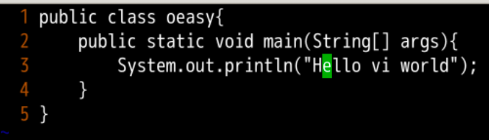
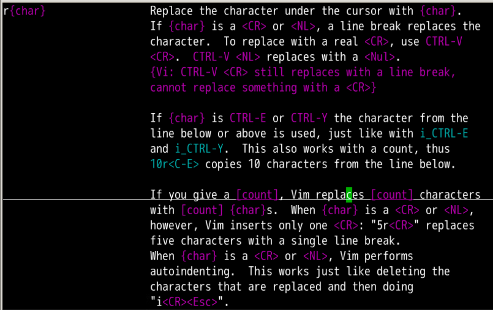
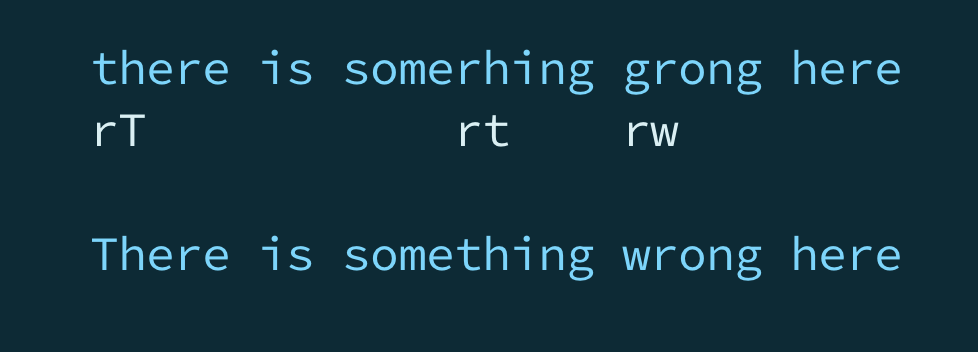
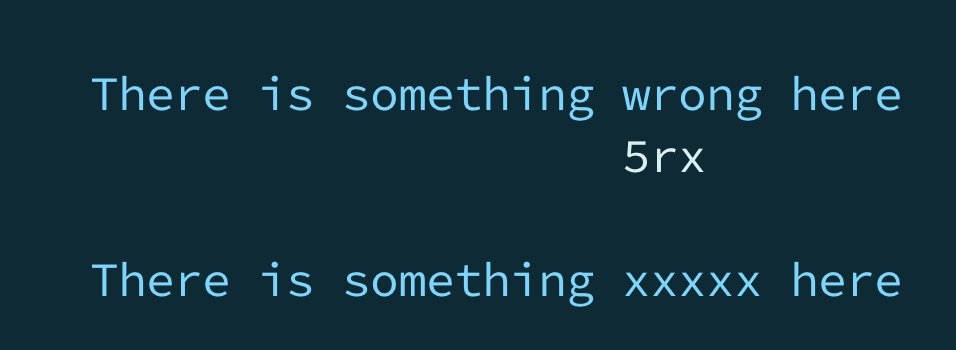
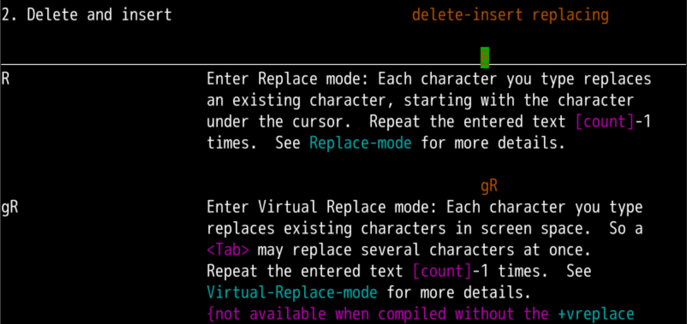
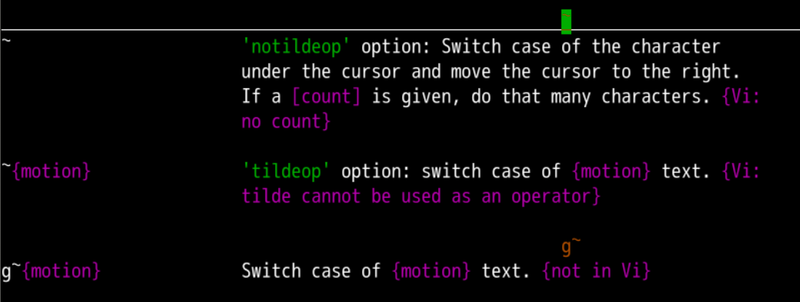

替换模式
回忆上节课内容🤔
- 上次我们学到的最有用的就是c
- 他和d的区别就是删除之后进入到插入模式
- c可以配合
motion
- 可以用ciw来快速删除当前光标所在的单词
- 可i和a 配合的文字块
w word 小词W Word 大词s sentence 句子p paragraph 段落( 、) 小括号[ 、] 中括号{ 、} 大括号t tag 标签
it 标签内部 不包含标签at 标签外部 包含标签
"、' 引号
- 还有没有更快速的办法进行编辑吗？🤔
动手练习

- 当前光标在
e上面，如上图
- 如果我们dfo,会如何？
- 如果我们dto,会如何？
- 如果我们di{,会如何？
- 如果我们dFo,会如何？
- 如果我们d2fo,会如何？
- 还有什么可以很神奇的操作吗？
- 各种试试，把结果告诉我！
- 这次我们要研究更快速的模式，替换模式
找到手册📕
- 还是在
change.txt里面上下翻，找到了r
- 可以用
:h r

- 看起来是什么不对，就直接放到那个位置
- 然后 r 成想要的
来试一下

再试试
- 把光标放在
oeasy中的a上，模式处于普通模式
- r1
- 就会把原来的
a替换为1
- 如果要把
1替换为一个回车换行
- 就要r回车
- 支持
[count]，比如4r2,替换4个字符，都变成2
- 就像下面这样

替换模式

- 在正常模式下，用R进入改写模式
- 可以在左下角状态栏观察到
- 然后光标在
oeasy的a上面
- 写入
1234
- 我们看到原来的文字被替换掉了
大小写的改写
- 我们常用的其实还有个人物
- 就是改大小写
- 这个是
~
- 可以
:h ~ 查询手册

tilde
- 这个符号叫做~波浪号(tilde)
- 把光标放在某个字符上
- 摁下~
- 大写变小写，小写变大写
- 这个~还支持
[count]
- g ~ 就支持
motion
- 如果设置
:set tildeop
- ～ 就支持
motion
- 比如～e
- 但是单个字母的大小写修改就不管用了
- 需要～l
- 其实我们平时还是控制字母大写的情况多
- 所以
:se notildeop
总结
- 这次我们学到了各种的替换模式
- r，替换当前光标的字符
- R，进入替换模式
- ~，改变大小写
- 这个东西很多，我们需要巩固一下
- 下次来个综合练习吧！
- 啥综合练习？🤔
- 下次再说 👋